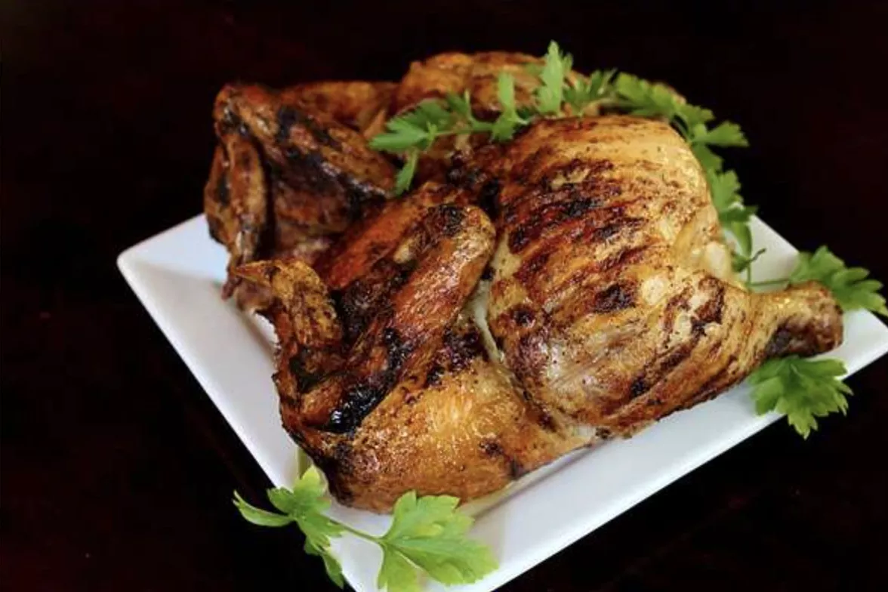

Rotisserie Chicken

Description
This rotisserie chicken recipe is so easy to make with simple seasonings on your grill. Occasional basting with a butter mixture ensures crispy skin and moist meat. Our family loves this! Rotisserie chicken is perfect as the main dish with French fries and coleslaw, or with any number of other sides..
Intimidated by the idea of making a rotisserie chicken at home? We're here to help. Get your grill and rotisserie attachment ready — you'll want to try this recipe ASAP.
Ingredients
- 1 whole chicken
- 2 tablespoons olive oil
- 2 teaspoons salt
- 1 teaspoon black pepper
- 1 teaspoon garlic powder
- 1 teaspoon onion powder
- 1 teaspoon paprika
- 1 teaspoon dried thyme
- 1 teaspoon dried rosemary
- 1 teaspoon dried oregano
- 1 lemon, cut in half
- 4 garlic cloves, smashed
Steps
- Remove the giblets from the chicken cavity if present and rinse the chicken.
- In a small bowl, mix together the salt, pepper, garlic powder, onion powder, paprika, thyme, rosemary, and oregano.
- Rub the chicken with olive oil, making sure to coat it evenly and sprinkle the seasoning mixture all over the it.
- Stuff the cavity with the lemon halves, smashed garlic cloves.
- MUsing kitchen twine, tie the legs together and tuck the wings under the chicken to ensure even cooking.